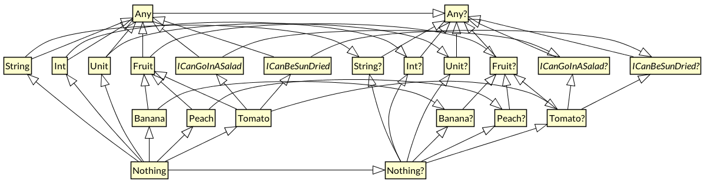

kotlin 类型结构设计
无论在静态语言还是动态语言中，「类型系统」都起到了至关重要的作用。
类型系统简介
在计算机科学中，类型系统用于定义如何将编程语言中的数值和表达式归类为许多不同的类型，如何操作这些类型，这些类型如何互相作用。
类型可以确认一个值或者一组值具有特定的意义和目的（虽然某些类型，如抽象类型和函数类型，在程序运行中，可能不表示为值）。
类型系统的作用
类型系统在各种语言之间存在比较大的差异。最主要的差异存在于编译时期的语法，以及运行时期的操作实现方式。
但是他们的目的都是一致的：
1. 安全，有了类型系统以后就可以实现类型安全，这时候程序就变成了一个严格的数学证明过程，编译器可以机械地验证程序某种程度的正确性，从而杜绝很多错误的发生。比如：Scala、Java。但是 JavaScript 等动态语言/弱类型语言就要借助其他插件（如 ESLint）来提示语法等错误。
2. 抽象能力。在安全的前提下，一个强大的类型系统的标准是抽象能力，能将程序中的很多东西纳入安全的类型系统中进行抽象，这在安全性的前提下又不损耗灵活性，甚至性能也能很优化。动态语言的抽象能力可以很强，但安全性和性能就不行了。泛型、高阶函数（闭包）、类型类、Monad、Lifetime（Rust） 属于这一块。
3. 工程能力，一个强类型的编程语言比动态类型的语言更适合大规模软件的构建，哪怕不存在性能问题，但是同样取决于前两点。
Hint: 想深入了解类型系统的朋友可以参考 《Type Systems》和 《Types and Programming》
Kotlin 作为一门静态类型编程语言，同样拥有着强大的类型系统。

Kotlin 的类型系统
1.1 基本数据类型 —— Int,Boolean 及其他
我们都知道，Java 将 基本数据类型 和 引用类型 做了区分：
- 基本数据类型，例如 int 的变量直接存储了它的值，我们不能对这些值调用方法，或者把它们放到集合中。
- 引用类型的变量存储的是指向包含该对象的内存地址的引用。
在 Kotlin 中，并不区分基本数据类型和包装类型——你使用的永远是同一个类型。
1.2 数字转换
Kotlin 中我们必须使用 显示转换 来对数字进行转换,例：
如果觉得这种方式不够简便，你也可以尝试使用 Kotlin 中的字面量：
- 使用后缀
L表示Long:123L - 使用后缀
F表示Float:.123f、1e3f - 使用前缀
0x/0X表示十六进制：0xadcL - …
当你使用数字字面值去初始化一个类型已知的变量时，又或是把字面值作为实参传给函数时 ，会发生隐式转换，并且算数运算符会被重载。
例：
1.3 通用类型系统 —— Any, Any?
和 Object 作为 Java 类层级结构的顶层类似，Any 类型是 Kotlin 所有非空类型 的超类（ex: String, Int)。
与 Java 不同的是： Kotlin 不区分「原始类型」（primitive type）和其它的类型。它们都是同一类型层级结构的一部分。
如果定义了一个没有指定父类型的类型，则该类型将是 Any 的直接子类型:
如果你为定义的类型指定了父类型，则该父类型将是新类型的直接父类型，并且新类型的最终祖先为 Any。
|
|
如果你的类型实现了多个接口，那么它将具有多个直接的父类型，而 Any 同样是最终的祖先。
|
|
Kotlin 的类型检查器实施父类型/子类型关系。
例如你可以将子类型值存储到父类型变量中：
但是你不能将父类型值存储到子类型变量中：
另外，Kotlin 把 Java 方法参数和返回类型中用到的 Object 类型看作 Any(更确切地是当做「平台类型」)。当 Kotlin 函数函数中使用 Any 时，它会被编译成 Java 字节码中的 Object。
Hint: 平台类型本质上就是 Kotlin 不知道可控性信息的类型。
上面提到：在 Kotlin 中， Any 是所有 非空类型 的超类。
你可能会有疑问： null 类型的父类是什么呢？
1.4 可空类型(Nullable Types) —— Int？,Boolean？ 及其他
与 Java 不同，Kotlin 区分非空（non-null）和可空（nullable）类型。到目前为止，我们看到的类型都是非空类型，Kotlin 不允许 null 作为这些类型的值。访问非空类型的变量将永远不会抛出空指针异常。
由于 null 只能被存储在 Java 的引用类型的变量中，所以在 Kotlin 中基本数据的可空版本都会使用该类型的包装形式。
同样的，如果你用基本数据类型作为泛型类的类型参数，Kotlin 同样会使用该类型的包装形式。
我们可以在任何类型后面加上？，比如Int?，实际上等同于Int? = Int or null，通过合理的使用，我们能够简化很多判空代码。并且我们能够有效规避 NullPointerException导致的崩溃。基于可空类型，Kotlin 才拥有很多促使安全的运算符：
?. —— 安全调用
?.允许我们把一次 null 检查和一次方法的调用合并成一个操作，比如：
str?.toUpperCase() 等同于 if (str != null) str.toUpperCase() else null
当然，?. 同样可以处理属性：
|
|
?: —— Elvis 运算符
刚开始我也不知道为什么称之为「Elvis 」运算符——直到我看到了这张图…

如果你不喜欢这个名字，我们也可以叫它——「null 合并运算符」。如果你学习过 Scala，这类似于 getOrElse:
|
|
另外还有as?（安全转换）、!!（非空断言）、let、lateinit（延迟初始化属性）等此处就不详细介绍。
1.5 Unit —— Kotlin 里的 void
Kotlin 是一种表达式导向的语言，所有流程控制语句都是表达式。它没有 Java 和 C 中的 void 函数，函数总是会返回一个值。有时候函数并没有计算任何东西 —— 这被我们称作他们的副作用（side effect），这时将会返回 Unit——具有单一值的类型。
大多数情况下，你不需要明确指定 Unit 作为返回类型或从函数返回Unit。如果编写的函数具有块代码体，并且不指定返回类型，则编译器会将其视为返回 Unit 类型，否则编译器会使用推断的类型。
Unit 并没什么特别之处。就像任何其他类型一样，它是 Any 的子类型，而 Unit? 是 Any? 的子类型。
然而 Unit? 类型却是一个奇怪的特殊例子，这是 Kotlin 的类型系统一致性的结果。Unit? 类型只有两个值：Unit 单例和 null。我从来没有发现需要明确使用 Unit? 类型的地方，但是在类型系统中没有特殊的 void 这一事实，使得处理各种函数泛型变得更加容易。
1.6 Nothing
在 Kotlin 类型层级结构的最底层是 Nothing 类型。
顾名思义，Nothing 是没有实例的类型。Nothing 类型的表达式不会产生任何值。
注意 Unit 和 Nothing 之间的区别，对 Unit 类型的表达式求值将返回 Unit 的单例，而对 Nothing 类型的表达式求值则永远都不会返回。
这意味着任何类型为 Nothing 的表达式之后的所有代码都是无法得到执行的（unreachable code），编译器和 IDE 会向你发出警告。
什么样的表达式类型为 Nothing 呢？流程控制中与跳转相关的表达式。
例如 throw 关键字会中断表达式的计算，并从函数中抛出异常。因此 throw 就是 Nothing 类型的表达式。
通过将 Nothing 作为所有类型的子类型，类型系统允许程序中的任何表达求值失败。这是真实世界的模型，例如 JVM 在计算表达式时内存不足，或者是有人拔掉了计算机的电源插头。这也意味着我们可以从任何表达式中抛出异常。
|
|
你可能会惊奇地发现，return 语句的类型也为 Nothing。return 是一个流程控制语句，它立即从函数中返回一个值，打断其所在表达式的求值。
|
|
进入无限循环或杀死当前进程的函数返回类型也为 Nothing。例如 Kotlin 标准库将 exitProcess 函数声明为：
如果你编写返回 Nothing 的自定义函数，编译器同样能检查出调用函数后无法得到执行的代码，就像使用语言本身的流程控制语句一样。
与空安全一样，不可达代码分析是类型系统的一个特性。无需像 Java 一样在编译器和 IDE 中使用一些手段进行特殊处理。
1.7 可空的 Nothing?
Nothing 像任何其他类型一样，如果允许其为空则可以得到对应的类型 Nothing?。Nothing? 只能包含一个值：null。事实上 Nothing? 就是 null 的类型。
Nothing? 是所有可空类型的最终子类型，所以我们可以使用 null 作为任何可空类型的值。
参考：